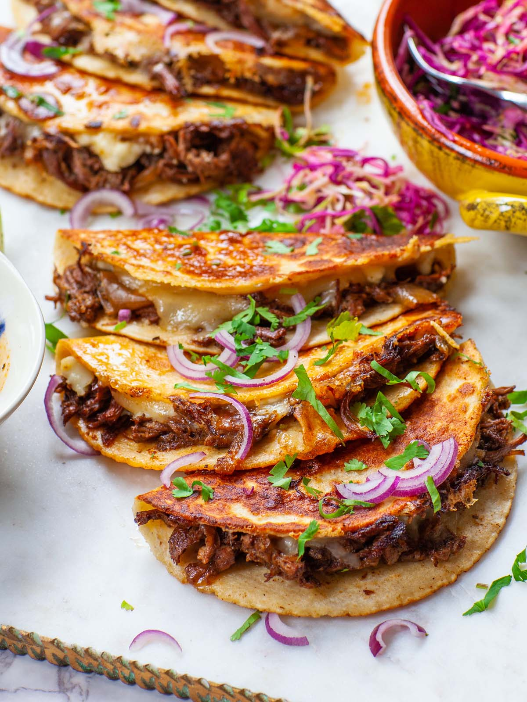

Tacos

A Mexican Staple
A taco is a traditional Mexican food consisting of a small hand-sized corn- or
wheat-based tortilla topped with a filling.
The tortilla is then folded around the filling and eaten by hand.
Ingredients
- 1 pound ground beef, or ground turkey
- 2 teaspoons chili powder
- 1 teaspoon ground cumin
- ½ teaspoon garlic powder
- ½ teaspoon dried oregano
- ¼ teaspoon onion powder
- ¼ teaspoon salt
- ⅛ teaspoon black pepper
- ½ cup tomato sauce
- ½ cup water
- 8 taco-size corn or flour tortillas
- Toppings, as desired: shredded cheese, shredded lettuce, chopped tomatoes, sour cream, avocado, guacamole, cilantro, chopped red onion, etc.